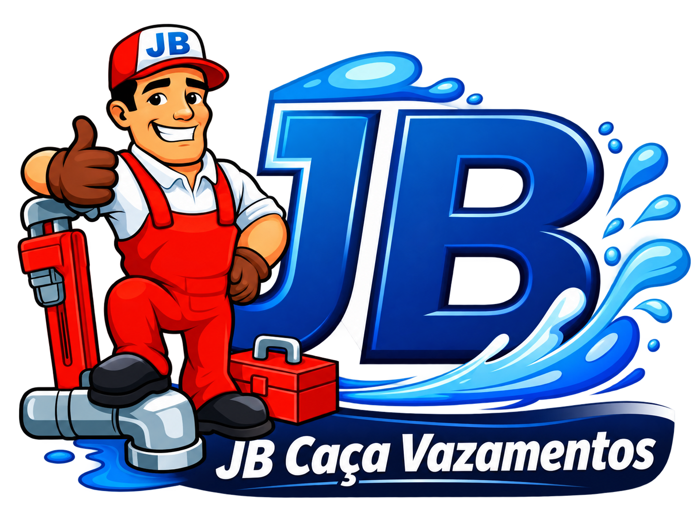

Atendimento 24hAtendendo Agora
Caça vazamentos em Palhoça e Grande Florianópolis
Localizamos vazamentos ocultos com métodos não destrutivos. Atendimento emergencial 24 horas.
- +10 anos
de experiência - Garantia
- Orçamento sem
compromisso
NOSSOS SERVIÇOS
Encontramos a origem do vazamento
Uma conta de água alterada ou sinais de umidade podem indicar um vazamento oculto. A JB investiga a rede de água potável para localizar o problema com métodos não destrutivos.
Vazamentos ocultos
Investigamos vazamentos na rede de água potável, mesmo quando o ponto não está aparente.
Conta de água alterada
Buscamos a possível origem do consumo elevado para identificar perdas de água.
Localização não destrutiva
Utilizamos métodos de detecção para encontrar o ponto do vazamento sem quebra desnecessária.
SOLICITE ATENDIMENTO
Conte o que está acontecendo
Envie as informações do problema para iniciarmos seu atendimento. O orçamento é sem custo e sem compromisso.
TRABALHOS REAIS
Veja a JB em ação
Registros de atendimentos, investigações e serviços realizados em instalações hidráulicas.
Precisa de atendimento?
Solicitar atendimentoREGIÕES DE ATENDIMENTO
Atendemos Palhoça e a Grande Florianópolis
Atendimento emergencial todos os dias para residências, comércios e empresas. Selecione sua cidade para visualizá-la no mapa.
Dúvidas frequentes
Respostas rápidas para você saber como podemos ajudar.
Como saber se tenho um vazamento oculto?
Conta de água mais alta que o normal, manchas de umidade e sinais de água sem origem aparente podem indicar um vazamento. A JB pode investigar a rede de água potável para localizar a possível origem.
Vocês precisam quebrar paredes ou pisos para encontrar o vazamento?
A localização é feita com métodos não destrutivos, buscando identificar o ponto do vazamento sem quebra desnecessária. Se alguma intervenção for necessária, ela deve ser explicada antes do serviço.
Minha conta de água aumentou. Vocês podem ajudar?
Sim. A investigação pode ajudar a identificar se há perda de água na instalação. Entre em contato e conte o que mudou na fatura.
O atendimento funciona de madrugada, aos domingos e feriados?
Sim. A JB atende emergências 24 horas, todos os dias.
Preciso agendar uma visita?
Para serviços programados, o agendamento deve ser feito com pelo menos um dia de antecedência. Em emergências, entre em contato para solicitar atendimento imediato.
O orçamento tem custo?
Não. O orçamento é gratuito e sem compromisso.
O serviço tem garantia?
Sim. A JB oferece garantia. As condições são informadas conforme o serviço contratado.
Quais cidades vocês atendem?
Palhoça, Florianópolis, São José, Biguaçu, Santo Amaro da Imperatriz, Governador Celso Ramos e Antônio Carlos.
Ainda tem alguma dúvida? Fale com a JB agora.
Chamar no WhatsApp